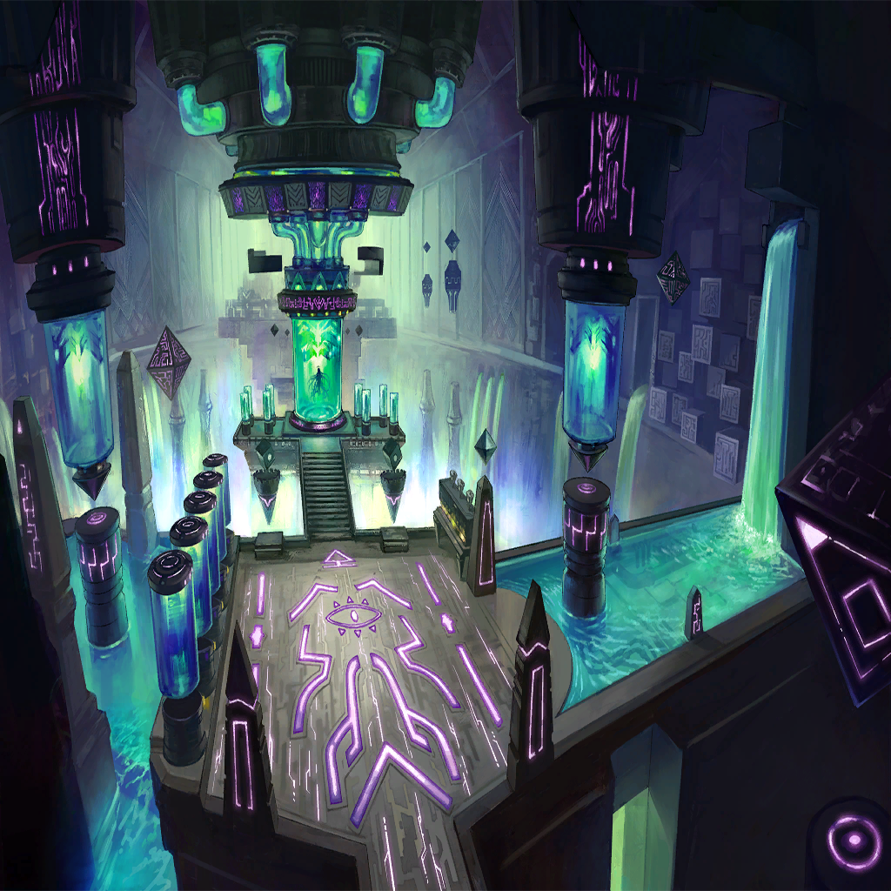

Waginau
Waginau
Waginau
Waginau
| |
| |
| Before every beginning, there is an end. | |
| Before the age of humanity, long before the regions became as they are, there was life on this world under a different heavenly order... | |
| Its legacy now reduced to mere stories, which stand as remnants of that life once lived. | |
| Though that life is long gone, the generations that followed are all its hopes made manifest. | |
| These are the tales—the final throes—of those who would ultimately reveal themselves to be dragons... | |
| |
| Along with the humble story of a girl burdened with everything, and the foolish dragon who tried to save her. | |
| |
| |
| ??? | I did not expect the erosion to have progressed so far already. |
| ??? | Hierosolyma is obviously not the paradise it once was. |
| ??? | Yeah... Looks like we've failed, huh? |
| ??? | Well, I suppose that just means it's up to us to see that all is in good order before we leave this world. |
| ??? | Saving this world is the least we can do, really. We are going to be imposing our will upon her, after all. |
| ??? | You agreed to stand with us in that, did you not, Zafeiris? |
| Zafeiris | I did, but still, Schmeier... |
| Schmeier | Oh, don't be so stubborn! We're about to initiate her first test runs! Wipe that grimace off your face! |
| Schmeier | We wouldn't want the first expression our daughter sees to be something so dour, now, would we? |
| Zafeiris | ... |
| Schmeier | Oh, dear! It's time. Come back to the lab. |
Waginau |
What...did I just see? |
| Zafeiris | That was me, as I was in bygone days. Quite different from what you see now, eh? |
| Zafeiris | I suppose it would be more accurate to call it my past life, given the current state of things. |
Waginau |
Ah, right. I'd almost forgotten that you're a Fallen now. |
| Zafeiris | Indeed. Those with souls corrupted and degenerated by sin are no longer the beings they once were. |
Waginau |
Are we within a memory of some sort, then? I can't even touch anything. What am I to do here? |
| Zafeiris | Yes, this is my memory. Because I am a vestige of my former self, you are connected to and can see all that lies within me. |
| Zafeiris | You will learn firsthand the power and skill of the dragons...along with the depths of their sin... |
| Zafeiris | All of which would come together to form your new flesh and blood. |
Waginau |
... |
| |
|  | |
| Schmeier | There you are! About time you showed up. |
| Zafeiris | Are you...sure I'm qualified for this? |
| Zafeiris | I have no experience raising a child. We dragons are spawned complete and fully formed. |
| Zafeiris | Furthermore, I've only seen this world through conflict. These claws, and the bloodstained battlefields they've been employed in, are all that I am. |
| Zafeiris | Do you seriously believe I can play house like the humans do? |
| Schmeier | It's a little late for such contentions, Zafeiris. |
| Schmeier | We've already discussed this. She needs an exceptionally stalwart custodian. |
| Schmeier | Otherwise, she'd never survive the coming world. |
| Schmeier | We haven't the luxury of another choice. You know this. |
| Schmeier | We dragons have made many mistakes, the worst of which is allowing the Shell of the World to degenerate as it has. |
| Schmeier | A system meant to protect us, now devouring the world we inhabit... We cannot ignore this. We must rectify this errancy. |
| Schmeier | The next generations—effectively visitors from another world—should not be burdened with such impossible circumstance. |
| Zafeiris | The humans who've already rooted themselves in this world have started shaping their own society, though. |
| Zafeiris | And more of them continue to drift in unwillingly as we speak. Is there a way to stop that? |
| Schmeier | There is not. Research on matters regarding this issue should be Ophioneus' domain. |
| Schmeier | I wonder what he's doing now... |
| Zafeiris | I'm sure, like you, these humans are looking into this problem. |
| Schmeier | Like us, you mean? Don't make it sound as though you're not with me on this. |
| Schmeier | It's our beautiful little daughter who's going to save the world, after all. |
| ??? | All phases finalized. Field structure nominal. Vessel construction complete. |
| Schmeier | Perfect! Welcome to the world, little one! |
| Schmeier | Can you hear us, Ouroboros? |
| Ouroboros? | Hnng... Ah... |
| Schmeier | Hmm? Are you not yet capable of functioning properly? Odd. I've designed you with a body comparable to what we dragons possess. |
| Ouroboros? | Ah... Agh... |
| Zafeiris | Whoa! Careful, now. |
| Zafeiris | Are you all right? |
| Ouroboros? | Ah? |
| Zafeiris | Schmeier, can she not speak? |
| Schmeier | That shouldn't be the case. According to my readings, there aren't any functional issues with her structure. |
| Schmeier | She's most likely just not yet used to her body. Which stands to reason, given that she was forced into it. |
| Ouroboros? | Who...are...you? |
| Zafeiris | My name is Zafeiris. |
| Ouroboros? | Za...feiris? |
| Zafeiris | Right. And you are the physical vessel housing Ouroboros, the consciousness of the Shell of the World. |
| Ouroboros? | Ouro...? Shell? Con...sciousness? |
| Schmeier | Hahaha! Zafeiris, she's just a child, only but a few moments old! |
| Schmeier | Surely you don't expect her to understand all of that just yet! |
| Zafeiris | How else was I meant to explain—? |
| Schmeier | Let's just start with a name. What shall we call you? |
| Ouroboros? | A...name? |
| Schmeier | Your own personal identifier. Let's see... How do you feel about...Lil? |
| Schmeier | It means "ocean" in our old tongue. Perfect for a body full of never-before-seen possibilities, don't you think? |
| Lil' | Lil? I'm...Lil? |
| Schmeier | That's right, Lil. Don't you worry, though. There's no rush. You'll learn everything you need to learn, little by little. |
| Schmeier | Your body is that of a dragon. It is timeless. You have all of eternity to learn, unlike us. |
| Zafeiris | Hmph. |
| Lil' | Learn? |
| Schmeier | Yes. There's a lot of studying to do. Are you feeling up to it? |
| Schmeier | We'll teach you everything you need to know to save this world, sweet daughter of ours. |